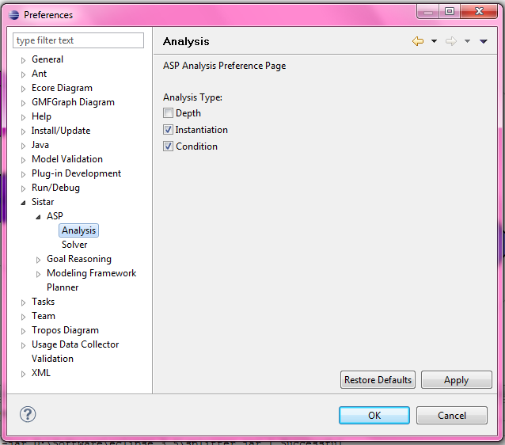
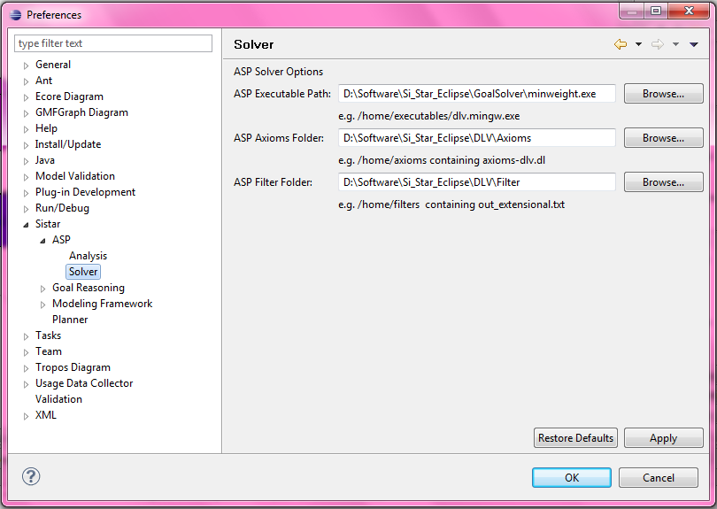

ASP Analysis
There is a preference of Depth, Instantiation and Condition to mention
whether these properties should be used for analysis

ASP Solver
There is a preference of ASP Executable, to specify the executable to be used for analysis,
Axiom folder, to specify the folder containing all axioms to be used and Filter folder to specify the folder
containing filter to be used
